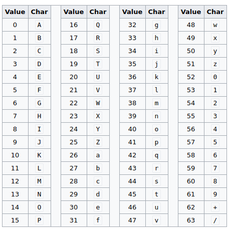

Sobre Cifra de César
A Cifra de César é uma das mais simples e conhecidas técnicas de criptografia. É um tipo de cifra de
substituição na qual cada letra do texto é substituída por outra tendo como base a 'quantidade de saltos'.
Por exemplo: Usando três como a quantidade de saltos, a letra 'A' se transforma na letra
'D'. A letra 'B', na 'E' e assim por diante.
O nome do método é em homenagem a Júlio César, um líder militar e político romano, que o utilizava para se comunicar com os seus generais.
Sobre Base64
Base64 é um método para codificação de dados para transferência na Internet. É utilizado frequentemente para transmitir dados binários por meios de transmissão que lidam apenas com texto, como por exemplo para enviar arquivos anexos por e-mail. O nome se dá pois há 64 caracteres ([A-Z], [a-z], [0-9], ['+'] e ['/'])
